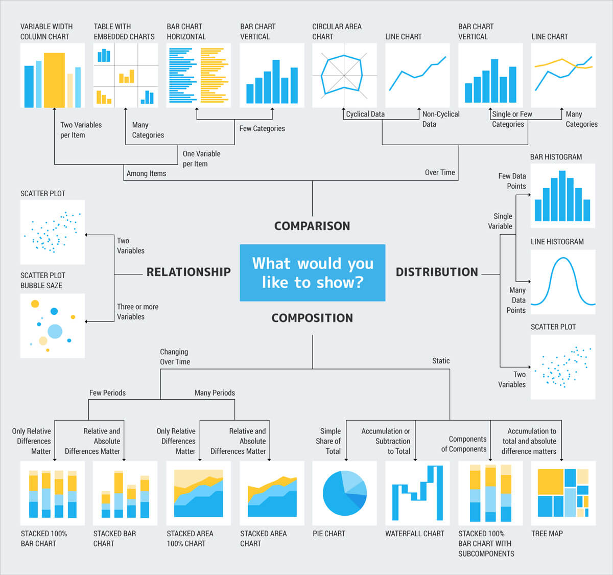
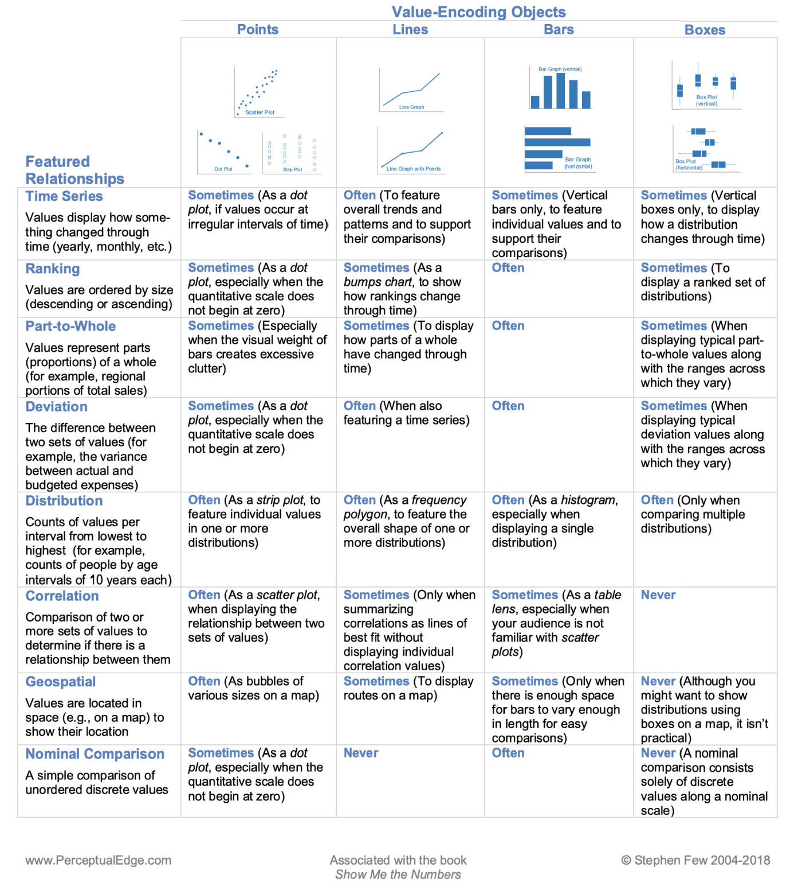
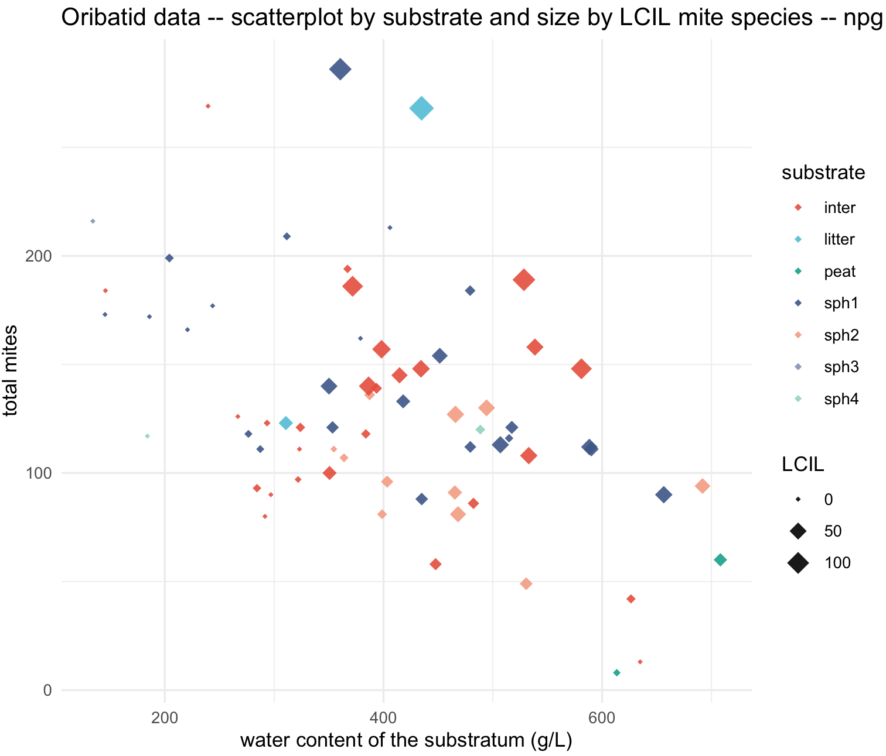
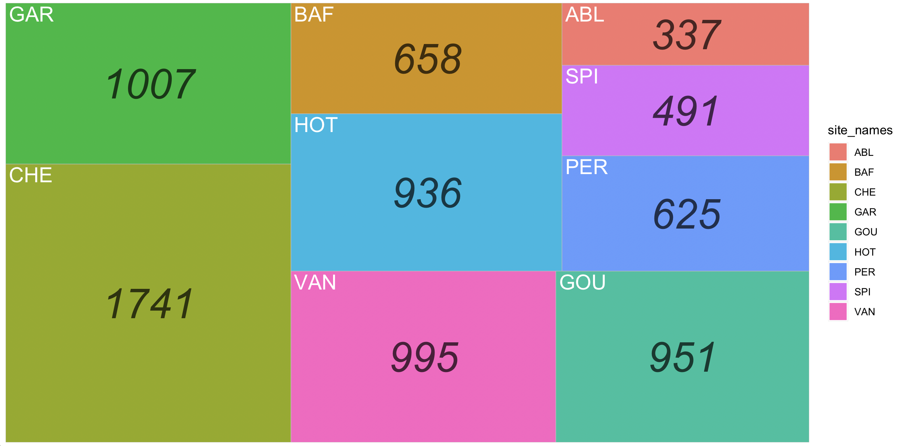

Session 10 – Basic Graphics
10.1 What would you like to show?
An important aspect of communicating science or research is to select the correct plot, chart, and graphics. Today there is a plethora of options for graphics that would help you to inform visually the results of experiments, test, and possible projections. However, you want to present graphics that are the easiest for your audience to read and visually pleasing. This means that it has to have the right amount of detail, minimal extraneous information (e.g., 3D or fancy charts), and highlight important relationships that you are trying to emphasize. In other words, the chart that you select must convey clearly and succinctly information about data in study.
I tried to find a guide chart for selecting graphics. I included an adapted version of Andrew V. Abela chart on what would you like to show? modified and updated here.

Some more questions that you can ask yourself to select graphics:
Distribution: If my data is continuous, do I want to know the shape of the distribution? Where do my all (or particular) values fall in it? Am I interested in finding outliers?
Relationship: Am I interested in finding how two or more variables are related to one another?
Composition: Am I interested in how different components made up the whole of the dataset?
Comparison: How are values similar or different given a group, category, or time?
Here is another guide chart that might help you choose the correct graphics:

10.2 Bar charts
One of the most basic graphs is those that illustrate counts or mean values of discrete variables or ranges of values as groups in a continuous variable. For counts, the x-axis includes discrete variables and the y-axis are the counts assigned to each these variables (this is a bar graph). For a continuous variable, values on this variable can be divided into groups or ranges (e.g., 0-5, 6-10, 11-15, 16-20, etc) in the x-axis and then the number of times that individual values of the continuous variable fall in the ranges are represented in the y-axis (this is a histogram).
17) To do a bar chart, we need a dataset of discrete variables that include count and in the correct format to ggplot2.
We will use the ‘ichtyo’ dataset of the package ‘ade4’.
## we will load 'ade4' and the ‘ichtyo’ dataset
library(ade4)
data(ichtyo)
ichtyo_data <- ichtyo$tab
head(ichtyo_data)
# HOT VAN CHE SPI GOU BAF GAR ABL PER
#1 57 47 60 11 27 17 10 9 21
#2 9 25 19 6 2 5 0 4 6
#3 48 60 52 16 25 24 17 8 12
#4 26 50 32 8 6 11 2 10 5
#5 26 43 31 14 9 18 13 14 2
#6 62 43 47 16 11 9 15 16 3
str(ichtyo_data)
#'data.frame': 32 obs. of 9 variables:
# $ HOT: num 57 9 48 26 26 62 17 18 9 12 ...
# $ VAN: num 47 25 60 50 43 43 34 22 14 9 ...
# $ CHE: num 60 19 52 32 31 47 28 18 8 9 ...
# $ SPI: num 11 6 16 8 14 16 13 9 5 10 ...
# $ GOU: num 27 2 25 6 9 11 8 3 8 2 ...
# $ BAF: num 17 5 24 11 18 9 13 7 8 2 ...
# $ GAR: num 10 0 17 2 13 15 14 6 1 10 ...
# $ ABL: num 9 4 8 10 14 16 5 8 1 5 ...
# $ PER: num 21 6 12 5 2 3 4 4 0 0 ...For a bar chart, we need total counts. Therefore, we need to get the total sums per each column using colSums() and as a data frame using as.data.frame().
## colum sum as data frame
ichtyo_sum_df <- as.data.frame(colSums (ichtyo_data, na.rm = TRUE))
ichtyo_sum_df
# colSums(ichtyo_data, na.rm = TRUE)
#HOT 936
#VAN 995
#CHE 1741
#SPI 491
#GOU 951
#BAF 658
#GAR 1007
#ABL 337
#PER 625
## build a nicer data frame and add column of site_names
ichtyo_sum_df$site_names <- rownames(ichtyo_sum_df)
## upgrade column names
names(ichtyo_sum_df) <- c("counts", "site_names")
ichtyo_sum_df
# counts site_names
#HOT 936 HOT
#VAN 995 VAN
#CHE 1741 CHE
#SPI 491 SPI
#GOU 951 GOU
#BAF 658 BAF
#GAR 1007 GAR
#ABL 337 ABL
#PER 625 PER
## add count labels for later use
ichtyo_sum_df$count_label <- as.character(ichtyo_sum_df$counts)
str(ichtyo_sum_df)
#'data.frame': 9 obs. of 3 variables:
# $ counts : num 936 995 1741 491 951 ...
# $ site_names : chr "HOT" "VAN" "CHE" "SPI" ...
# $ count_label: chr "936" "995" "1741" "491" ...We can now plot our bar chart with site_names in the x-axis and counts in the y-axis. A series the options to the ggplot are added: ggplot() is the main scaffold of the plot and includes the argument data = ichtyo_sum_df as source of data,aes() defines axis in the 2D ggplot, x is the x-axis and we defined site_names as the variable for that axis,y is the y-axis and we defined counts as the variable for that axis, fill is the variable that will define groups to color the bars in the plot.geom_bar() is the option for bar charts, the argument colour = black is for black countour of the bars, the argument stat = "identity" basically says that we want the values of the y-axis (i.e., counts) as the heights of the bars.guides(fill = FALSE) indicagtes that we do not want legends. theme_minimal() is a present style of the plot that is simple. xlab(), ylab() and ggtitle() are labels for the axis and title, you can put in there whatever you want.
## checking if ggplot2 and ggsci are loaded
require(ggplot2)
require(ggsci)
# base plot
ichtyo_barchart <- ggplot(data=ichtyo_sum_df, aes(x=site_names, y=counts, fill = site_names)) +
geom_bar(colour="black", stat="identity") +
theme_minimal() +
xlab("Sites on a place") +
ylab("Total counts") +
ggtitle("My First Bar Chart")
ichtyo_barchart
We can simplify this plot with adding the counts on top of the bars with the count_label of the ichtyo_sum_df and remove the background grids. A series the options to the ggplot are added: geom_text() will add the text of the count_label using the site_names and counts as x and y coordinates and the argument vjust=-1 will move it a bit above the x/y coordinate.theme() will remove some unwanted elements by assigning them as element_blank() these include the y-axis text and all the grids.
ichtyo_barchart <- ggplot(data=ichtyo_sum_df, aes(x=site_names, y=counts, fill = site_names)) +
geom_bar(colour="black", stat="identity") +
theme_minimal() +
xlab("Sites on a place") +
ylab("Total counts") +
ggtitle("My First Bar Chart") +
geom_text(data=ichtyo_sum_df,aes(x=site_names,y=counts,label=count_label),vjust=-1) +
theme(axis.text.y = element_blank(),
panel.grid.major = element_blank(),
panel.grid.minor = element_blank())
ichtyo_barchartThe base colors of this plot are becoming cliché as the enormous popularity of ggplot2, so we can change it to something more original using the color packages that we presented on previous section.
# plot with futurama fill colors
ichtyo_barchart <- ichtyo_barchart + scale_fill_futurama()
ichtyo_barchart
10.3 Stacked bar charts
18) Some people argue against stacked bar charts, yet they are much better than pie charts to show relationships between proportions per sample.
We will use the ‘geom_col()‘ with the same dataset ‘ecomor’ of the package ‘ade4’. Notice that is a rather complex processing, yet you should be able to dissect the processing from input data to data frame ready for ggplot2.
## we will load 'ade4' and the ‘ecomor’ dataset
library(ade4)
data(ecomor)
#taxois a data frame with 129 species and 3 factors: Genus, Family and Order. It is a data frame of class'taxo': the variables are factors giving nested classifications.
ecomor_data <- ecomor$taxo
#categ is a data frame with 129 species, 2 factors : ’forsub’ summarizing the feeding place and ’diet’the diet type.
ecomor_data <- cbind(ecomor_data,ecomor$categ)
str(ecomor_data)
#'data.frame': 129 obs. of 5 variables:
# $ Genus : Factor w/ 86 levels "Acanithis","Aegithalos",..: 11 12 12 49 70 21 21 73 85 85 ...
# $ Family: Factor w/ 35 levels "Aegithalidae",..: 31 31 31 31 31 6 6 6 6 6 ...
# $ Ordre : Factor w/ 7 levels "Apodiformes",..: 1 1 1 1 1 2 2 2 2 2 ...
# $ forsub: Factor w/ 7 levels "A","B","F","G",..: 5 5 5 1 3 5 5 4 4 4 ...
# $ diet : Factor w/ 8 levels "F","G","H","I",..: 7 7 7 7 7 2 6 2 2 2 ...
## we subset to families and diet
ecomor_data_set <- subset(ecomor_data, select = c(Family, diet))
head(ecomor_data_set)
# Family diet
#E033 Trochilidae N
#E034 Trochilidae N
#E035 Trochilidae N
#E070 Trochilidae N
#E071 Trochilidae N
#E001 Columbidae G
## we split by family
list_of_families <- split(ecomor_data_set, ecomor_data_set$Family)
list_of_families
#$Aegithalidae
# Family diet
#E121 Aegithalidae I
#E048 Aegithalidae I
#
#$Alaudidae
# Family diet
#E104 Alaudidae H
#
#$Cardinalidae
# Family diet
#E057 Cardinalidae G
#E056 Cardinalidae G
#...
## we can calculate the frequency of diet types by each family of these birds
collect_families_processed <- list()
for(i in 1:length(list_of_families)) {
# i <- 1
one_family <- list_of_families[[i]]
name_family <- unique(one_family[,1])
one_family_df <- as.data.frame(table(one_family [,2]), stringsAsFactors = FALSE)
one_family_df_sum <- sum(one_family_df$Freq)
one_family_df$Freq <- one_family_df$Freq/one_family_df_sum
names(one_family_df) <- c("type_diet","Freq")
one_family_df$Family <- name_family
collect_families_processed [[i]] <- one_family_df
}
## we put all of these in a single data frame
collect_families_processed_df <- do.call(rbind, collect_families_processed)
head(collect_families_processed_df)
# type_diet Freq Family
#1 F 0 Aegithalidae
#2 G 0 Aegithalidae
#3 H 0 Aegithalidae
#4 I 1 Aegithalidae
#5 J 0 Aegithalidae
#6 K 0 Aegithalidae
str(collect_families_processed_df)
#'data.frame': 280 obs. of 3 variables:
# $ type_diet: chr "F" "G" "H" "I" ...
# $ Freq : num 0 0 0 1 0 0 0 0 0 0 ...
# $ Family : Factor w/ 35 levels "Aegithalidae",..: 1 1 1 1 1 1 1 1 2 2 ...We can now plot a stacked bar plot. Notice we need 3 variables (columns): 2 categorical and 1 numeric. In this case the two categorical are type_of_diet and Family, and the one continuous is Freq.
## checking if ggplot2 and ggsci are loaded
require(ggplot2)
require(ggsci)
## the plot
diet_family_stackedbar <- ggplot(collect_families_processed_df) +
geom_col(aes(x = Family, y = Freq, fill = type_diet), color = "black")+
labs(title="Stacked Bar Graph -- Diet and Families Birds", x= "Family" , y="Frequency") +
coord_flip() +
theme_minimal() +
theme(axis.text.x = element_text(size=rel(0.7),angle = 90, vjust = 0.5, hjust=1))
diet_family_stackedbar <- diet_family_stackedbar + scale_fill_nejm()
diet_family_stackedbar
10.4 Histograms
19) To do a histogram, we need a dataset with continuous variables and we will divide into ranges and format them into ggplot2.
We will use two samples of the airway_scaledcounts.csv dataset that indicates gene expression.
## NOTE: remember to update the path to file with the dataset where you downloaded in your computer -- THIS IS EXCLUSIVE TO YOUR COMPUTER AND IT IS NOT THE PATH SHOWN BELOW
## load get 'airway_scaledcounts.csv' dataset
airway_data <- read.table("~/Desktop/Teach_R/class_pages_reference/bioinformatics_gitbook_1/ref_files_pdfs/airway_scaledcounts.csv",
header = TRUE, sep = ",", stringsAsFactors = FALSE)
# remove 'ensgene' variable
airway_data_red <- airway_data[,-1]
# select two sample: "SRR1039509" and "SRR1039517"
airway_data_red <- subset(airway_data_red, select = c(SRR1039509,SRR1039517))
str(airway_data_red)
#'data.frame': 38694 obs. of 2 variables:
#$ SRR1039509: num 486 0 523 258 81 ...
#$ SRR1039517: num 1097 0 781 447 94 ...We estimate a histogram for sample SRR1039509, for this we need to explore this with summary().
## summary
summary(airway_data_red$SRR1039509)
# Min. 1st Qu. Median Mean 3rd Qu. Max.
# 0.0 0.0 1.0 501.1 172.0 244921.0 For a regular histogram in ggplot2 we want geom_histogram() with the airway_data_red data frame that includes sample SRR1039509. Next, we need to define some parameters: (1) how often we want the bins to be separated with the argument breaks(), it usually will be a sequence called by function seq() and in this case from a minimum (i.e., 0) and maximum (i.e., 244921 - 250000) and width argument by= for example 1000. (2) you can choose the color of the boundary of the histogram with col= like red, its fill color fill= like green and transparency alpha where 0 is transparent and 1 completely opaque.
## checking if ggplot2 is loaded
require(ggplot2)
SRR1039509_histogram <- ggplot(data=airway_data_red, aes(x=SRR1039509)) +
geom_histogram(breaks=seq(0, 250000, by=1000),
col="red",
fill="green",
alpha = .2) +
labs(title="Histogram for SRR1039509", x="Expression range", y="Count") +
xlim(c(0,250000))+
theme_minimal()
SRR1039509_histogramThis histogram is quite skewed to the right and we notice the maximum of the sample (i.e., 244921) is ~500 x mean value. Some genes are highly overexpressed and most of these are rare (low count). We can modify the breaks() argument to series of individual breaks every 100 (e.g., 100,200,..,2000), in this last break it we want to include all genes +2000 expression units.
SRR1039509_histogram <- ggplot(data=airway_data_red, aes(x=SRR1039509)) +
geom_histogram(breaks=seq(0, 2000, by=100),
col="red",
fill="green",
alpha = .2) +
labs(title="Histogram for SRR1039509", x="Expression range", y="Count") +
xlim(c(0,2000))+
theme_minimal()
SRR1039509_histogram
This histogram is better, yet not ideal. First, it still is right skewed and count values >2000 were excluded from the graph. This suggest that we need to simplify our data and bin all values more 2000 to that maximum. We can do this by creating an small function that we create and named cap_2000_fun that uses ifelse().
## create a small function to cap values to 2000
cap_2000_fun <- function(x) {cap <- ifelse(x>2000,2000, x)
return(cap)}
## we can test our function
cap_2000_fun(1)
#[1] 1
cap_2000_fun(10000)
#[1] 2000Now, we can apply this function to airway_data_red using the modify() from the package purrr.
## modify values with function so all values >2000 will be cap to 2000
airway_data_red_capped <- purrr::modify(airway_data_red, cap_2000_fun)
## plot histogram
SRR1039509_histogram_capped <- ggplot(data=airway_data_red_capped, aes(x=SRR1039509)) +
geom_histogram(breaks=seq(0, 2000, by=100),
col="red",
fill="green",
alpha = .2) +
labs(title="Histogram for SRR1039509", x="Expression range with capped values to 2000 if more than this value", y="Count") +
xlim(c(0,2000))+
theme_minimal()
SRR1039509_histogram_cappedThis histogram still looks skewed to the right. We can try bin all values above 500 by creating a new function and use shorter breaks every 10 on ggplot2.
## create a small function to cap values to 500
cap_500_fun <- function(x) {cap <- ifelse(x>500,500, x)
return(cap)}
## modify values with function so all values >500 will be cap to 500
airway_data_red_capped <- purrr::modify(airway_data_red, cap_500_fun)
## plot histogram and modify breaks
SRR1039509_histogram_capped <- ggplot(data=airway_data_red_capped, aes(x=SRR1039509)) +
geom_histogram(breaks=seq(0, 500, by=10),
col="red",
fill="green",
alpha = .2) +
labs(title="Histogram for SRR1039509", x="Expression range with capped", y="Count") +
xlim(c(0,500))+
theme_minimal()
SRR1039509_histogram_capped We can also remove some low expressed genes (e.g., values less than 100) and over expressed genes (e.g., values more than 500). This can be done just by defining the argument
We can also remove some low expressed genes (e.g., values less than 100) and over expressed genes (e.g., values more than 500). This can be done just by defining the argument xlim() between 100 and 400.
## plot histogram and modify breaks
SRR1039509_histogram_capped <- ggplot(data=airway_data_red_capped, aes(x=SRR1039509)) +
geom_histogram(breaks=seq(0, 500, by=10),
col="red",
fill="green",
alpha = .2) +
labs(title="Histogram for SRR1039509", x="Expression range with capped -- yet be dropped less 100 and more 400 counts", y="Count") +
xlim(c(100,400))+
theme_minimal()
## NOTICE: the warning about dropping rows outside the xlim().
SRR1039509_histogram_capped
#Warning messages:
#1: Removed 34710 rows containing non-finite values (stat_bin).
#2: Removed 20 rows containing missing values (geom_bar). 10.5 Multiple histograms
20) To plot multiple histogram, we need two or more samples or populations with measurements on the same variable.
For this example, we will use the crabs database of the package MASS. We will compare the two species based on their CL carapace length (mm).
## check is MASS is loaded and get 'crabs' database
require(MASS)
data(crabs)
crabs_data <- crabs
str(crabs_data)
#'data.frame': 200 obs. of 8 variables:
# $ sp : Factor w/ 2 levels "B","O": 1 1 1 1 1 1 1 1 1 1 ...
# $ sex : Factor w/ 2 levels "F","M": 2 2 2 2 2 2 2 2 2 2 ...
# $ index: int 1 2 3 4 5 6 7 8 9 10 ...
# $ FL : num 8.1 8.8 9.2 9.6 9.8 10.8 11.1 11.6 11.8 11.8 ...
# $ RW : num 6.7 7.7 7.8 7.9 8 9 9.9 9.1 9.6 10.5 ...
# $ CL : num 16.1 18.1 19 20.1 20.3 23 23.8 24.5 24.2 25.2 ...
# $ CW : num 19 20.8 22.4 23.1 23 26.5 27.1 28.4 27.8 29.3 ...
# $ BD : num 7 7.4 7.7 8.2 8.2 9.8 9.8 10.4 9.7 10.3 ...We can plot overlaid histograms with its x-axis as x = CL and grouped by species as fill = sp and using geom_histogram(). You can control the width of the bins of the histogram with the argument binwidth and we selected 2.5.
## Overlaid histograms
crabs_sp_CL_plot <- ggplot(crabs_data, aes(x=CL, fill=sp)) +
geom_histogram(binwidth=1, alpha=.4, position="identity") +
ggtitle("Crab species CL overlap -- histograms") +
theme_minimal()
crabs_sp_CL_plotYou can add a line to indicate the mean of each species, but you have to determine such values in a separated data frame. We use function split() and indicate that is by species with crabs_data_CL$sp. This will create a list with two data frames each one per species.
## get mean per species
crabs_data_CL <- subset(crabs_data, select = c(sp, CL))
crabs_data_CL_sp_list <-split(crabs_data_CL, crabs_data_CL$sp)
str(crabs_data_CL_sp_list)
#List of 2
# $ B:'data.frame': 100 obs. of 2 variables:
# ..$ sp: Factor w/ 2 levels "B","O": 1 1 1 1 1 1 1 1 1 1 ...
# ..$ CL: num [1:100] 16.1 18.1 19 20.1 20.3 23 23.8 24.5 24.2 25.2 ...
# $ O:'data.frame': 100 obs. of 2 variables:
# ..$ sp: Factor w/ 2 levels "B","O": 2 2 2 2 2 2 2 2 2 2 ...
# ..$ CL: num [1:100] 16.7 20.2 20.7 22.7 23.2 24.2 26 27.1 26.6 27.5 ...Here are two forms that we get the mean of each species.
## first form
means_out_list <- list()
for(i in 1:length(crabs_data_CL_sp_list)) {
one_species_name <- names(crabs_data_CL_sp_list[i])
one_species_mean <- mean(crabs_data_CL_sp_list[[i]][,2], na.rm = TRUE)
one_sp_out <- data.frame(sp = one_species_name, sp_mean = one_species_mean, stringsAsFactors = FALSE)
means_out_list[[i]] <- one_sp_out
}
means_out_df <- do.call(rbind, means_out_list)
means_out_df
# sp sp_mean
#1 B 30.058
#2 O 34.153
## second form
crab_removed_sp_column_list <- lapply(crabs_data_CL_sp_list, function(x) { x[,1] <- NULL; x })
crab_sp_means <- lapply(crab_removed_sp_column_list, colMeans, na.rm = TRUE)
means_out_df <- do.call(rbind, crab_sp_means)
means_out_df <- as.data.frame(means_out_df)
means_out_df$sp <- rownames(means_out_df)
names(means_out_df) <- c("sp_mean", "sp")
means_out_df
# sp_mean sp
#B 30.058 B
#O 34.153 OWe can add a line to indicate the location of the mean of the histogram of each species with geom_vline().
## add mean line
crabs_sp_CL_plot <- crabs_sp_CL_plot + geom_vline(data=means_out_df,
aes(xintercept=sp_mean, colour=sp),
linetype="dashed", size=0.5)
crabs_sp_CL_plot
10.6 Density plots
21) These graphics are similar to histograms, but they are called geom_density(). We will use the same crab dataset to illustrate this example.
## check is MASS is loaded and get 'crabs' database
require(MASS)
data(crabs)
crabs_data <- crabs
str(crabs_data)
#'data.frame': 200 obs. of 8 variables:
# $ sp : Factor w/ 2 levels "B","O": 1 1 1 1 1 1 1 1 1 1 ...
# $ sex : Factor w/ 2 levels "F","M": 2 2 2 2 2 2 2 2 2 2 ...
# $ index: int 1 2 3 4 5 6 7 8 9 10 ...
# $ FL : num 8.1 8.8 9.2 9.6 9.8 10.8 11.1 11.6 11.8 11.8 ...
# $ RW : num 6.7 7.7 7.8 7.9 8 9 9.9 9.1 9.6 10.5 ...
# $ CL : num 16.1 18.1 19 20.1 20.3 23 23.8 24.5 24.2 25.2 ...
# $ CW : num 19 20.8 22.4 23.1 23 26.5 27.1 28.4 27.8 29.3 ...
# $ BD : num 7 7.4 7.7 8.2 8.2 9.8 9.8 10.4 9.7 10.3 ...We can plot overlaid densities with its x-axis as x = CL and grouped by species as fill = sp.
## Overlaid densities
crabs_sp_CL_plot_den <- ggplot(crabs_data, aes(x=CL, fill=sp)) +
geom_density(alpha=.3) +
ggtitle("Crab species CL overlap -- density plots") +
theme_minimal()
crabs_sp_CL_plot_den22) The flexibility of ggplot2 can be evidenced by combining histograms and density plots with the mean values.
crabs_sp_CL_plot_his_den <- ggplot(crabs_data, aes(x=CL, fill=sp)) +
geom_histogram(aes(y=..density.., fill=sp),
binwidth = 1,
alpha = .6,
colour = "black",
position = "identity") +
geom_density(mapping = aes(x=CL, fill=sp),
alpha = .4,
position = "identity") +
ggtitle("Crab species CL overlap -- histograms and density plots") +
theme_minimal()
# change some colors
crabs_sp_CL_plot_his_den <- crabs_sp_CL_plot_his_den +
scale_color_brewer(palette="Set3")+
scale_fill_brewer(palette="Set3")
crabs_sp_CL_plot_his_den10.7 Box plots
These graphics are similar to histograms and density plots that summarizes a distribution. In these plots, the graphics show the following summaries: (1) First quartile (Q1) or 25th Percentile, which is the middle value between the smallest value and the median of the dataset; (2) Median (Q2) or 50th Percentile, which is the middle value of the dataset; (3) Third quartile (Q3) or 75th Percentile, which is the middle value between the median and the highest value of the dataset; (4) A “box” named the interquartile range (IQR) that is bounded between the 25th and 75th percentiles; (5) Line or whisker that extend to a “minimum” equal to Q1 - 1.5xIQR, (6) Line or whisker that extend to a “maximum” equal to Q3 + 1.5xIQR; and (7) Outliers or values that fall below the “minimum” and above the “maximum”.

Source: Understanding Boxplots by Michael Galarnyk.
23) We can use the same crabs dataset to revise how to construct boxplots in ggplot2.
## check is MASS is loaded and get 'crabs' database
require(MASS)
data(crabs)
crabs_data <- crabs
str(crabs_data)
#'data.frame': 200 obs. of 8 variables:
# $ sp : Factor w/ 2 levels "B","O": 1 1 1 1 1 1 1 1 1 1 ...
# $ sex : Factor w/ 2 levels "F","M": 2 2 2 2 2 2 2 2 2 2 ...
# $ index: int 1 2 3 4 5 6 7 8 9 10 ...
# $ FL : num 8.1 8.8 9.2 9.6 9.8 10.8 11.1 11.6 11.8 11.8 ...
# $ RW : num 6.7 7.7 7.8 7.9 8 9 9.9 9.1 9.6 10.5 ...
# $ CL : num 16.1 18.1 19 20.1 20.3 23 23.8 24.5 24.2 25.2 ...
# $ CW : num 19 20.8 22.4 23.1 23 26.5 27.1 28.4 27.8 29.3 ...
# $ BD : num 7 7.4 7.7 8.2 8.2 9.8 9.8 10.4 9.7 10.3 ...We can present boxplots with its x-axis by species x = sp, y-axis by the CL measurement y = CL and box color as fill = sp.
## check ig ggplot2 is loaded
require(ggplot2)
## Boxplots with standard color without legend -- guides(fill=FALSE)
crabs_sp_CL_boxplot <- ggplot(crabs_data, aes(x=sp, y=CL, fill=sp)) +
geom_boxplot(width=0.3) +
labs(title="Crab species CL overlap -- boxplots", x="Species", y="CL - carapace length (mm)") +
theme_minimal()
crabs_sp_CL_boxplot_v1 <- crabs_sp_CL_boxplot + scale_fill_manual(values =c("#C7A76C", "#99B56B"))
crabs_sp_CL_boxplot_v1You can flip coordinates with coord_flip() and changed the colors of the plots using scale_fill_manual().
## flip coordinates
crabs_sp_CL_boxplot_v2 <- crabs_sp_CL_boxplot + coord_flip() + scale_fill_manual(values =c("#8C241B", "#29809E"))
crabs_sp_CL_boxplot_v2
10.8 Violin plots
24) We can use again the crabs dataset for violin plots containing its corresponding boxplot and mean value marker. Notice that we can stack different plots on a ggplot object. For violin plots, we selected a white color with fill= "white" and thinner silhouette with width = 0.5. For box plots, we selected a width = 0.3 and also added a diamond symbol for the mean value with stat_summar().
## check is MASS is loaded and get 'crabs' database
require(MASS)
data(crabs)
crabs_data <- crabs
str(crabs_data)
#'data.frame': 200 obs. of 8 variables:
# $ sp : Factor w/ 2 levels "B","O": 1 1 1 1 1 1 1 1 1 1 ...
# $ sex : Factor w/ 2 levels "F","M": 2 2 2 2 2 2 2 2 2 2 ...
# $ index: int 1 2 3 4 5 6 7 8 9 10 ...
# $ FL : num 8.1 8.8 9.2 9.6 9.8 10.8 11.1 11.6 11.8 11.8 ...
# $ RW : num 6.7 7.7 7.8 7.9 8 9 9.9 9.1 9.6 10.5 ...
# $ CL : num 16.1 18.1 19 20.1 20.3 23 23.8 24.5 24.2 25.2 ...
# $ CW : num 19 20.8 22.4 23.1 23 26.5 27.1 28.4 27.8 29.3 ...
# $ BD : num 7 7.4 7.7 8.2 8.2 9.8 9.8 10.4 9.7 10.3 ...
## violin and boxplots with mean indicated
crabs_sp_CL_violin <- ggplot(crabs_data, aes(x=sp, y=CL, fill=sp)) +
geom_violin(trim=FALSE, width=0.5, fill= "white", color = "black") +
geom_boxplot(width=0.3) +
stat_summary(fun = mean, geom="point", shape=5, size=4) +
labs(title="Crab species CL overlap -- violin and box plots", x="Species", y="CL - carapace length (mm)") +
scale_fill_manual(values =c("#8C241B", "#29809E")) +
theme_minimal()
crabs_sp_CL_violin
10.9 Scatterplots
These are graphics where the relationship of two variables presented in cartesian (x versus y) coordinates to display values. In ggplot2, such data points are presented with geom_point() and, in most cases, tendency and regression lines are added with geom_smooth().
As in the case of choices of colors, there are several types of point shapes (markers) and lines. These can be explored with options of the R package ggpubr. This package provides some easy-to-use functions for creating and customizing ggplot2- based publication ready plots.
## intall ggpubr
install.packages("ggpubr")
library(ggpubr)
## we can select from these types of point shapes; the number indicates the shape code.
show_point_shapes()+theme_minimal()+labs(y="")+theme(axis.text.x = element_blank(), axis.text.y = element_blank())We can control the line type with geom_line() and its argument linetype. Lines can also be modified manually with scale_linetype_manual() and it argument values.
## we can select from these types of lines, the number indicates the line code.
show_line_types()+theme_minimal()
Notice that you can also determine the type of line with argument lty that can be used in special type of ggplot function like geom_smooth. These codes are lty = 1 for “solid”, lty = 2 “dashed”, lty = 3 “dotted”, lty = 4 “dotdash”, lty = 5 “longdash” and lty = 6 “twodash”.
25) We will use the oribatid dataset from the R package ade4. This data set contains information about environmental control and spatial structure in ecological communities of Oribatid mites. The environmental variables include substrate a factor with seven levels that describes the nature of the substratum, shrubs a factor with three levels that describes the absence/presence of shrubs, topo a factor with two levels that describes the microtopography, density substratum density (g.L−1) and water content of the substratum (g.L−1). We will merge in a single data frame the environmental data and fauna information of these 70 sites to explore several types of scatterplots.
We can prepare oribatid dataset for the scatterplot.
## check is ade4 is loaded and get 'oribatid' database
require(ade4)
data(oribatid)
## environmental and genetic data
envir_data <- oribatid$envir
fauna_data <- oribatid$fau
## total number of oribatid mites
fauna_data$total_mites <- rowSums(fauna_data)
## we add a common column in both data frames, in this case the 'site'
envir_data$site <- rownames(envir_data)
fauna_data$site <- rownames(fauna_data)
## merge both data frames using 'site'
oribatid_data <- merge(envir_data, fauna_data, by ="site")
head(oribatid_data)
# you can explore this data frame content
str(oribatid_data)
#'data.frame': 70 obs. of 41 variables:
# $ site : chr "1" "10" "11" "12" ...
# $ substrate : Factor w/ 7 levels "inter","litter",..: 4 4 6 4 4 1 1 1 1 4 ...
# $ shrubs : Factor w/ 3 levels "few","many","none": 1 2 2 1 2 2 2 1 2 2 ...
# $ topo : Factor w/ 2 levels "blanket","hummock": 2 2 1 2 2 1 1 2 2 2 ...
# $ density : num 39.2 32.1 35.6 46.8 28 ...
# $ water : num 350 221 134 406 244 ...
# $ Brachy : int 17 22 36 28 3 41 6 7 9 19 ...
# $ PHTH : int 5 4 7 2 2 5 0 2 0 3 ...
# $ HPAV : int 5 5 35 12 4 12 6 3 1 7 ...
# $ RARD : int 3 3 9 13 12 0 0 2 2 0 ...
# $ SSTR : int 2 0 0 0 0 2 0 0 0 0 ...
# $ Protopl : int 1 0 2 0 0 0 0 0 0 0 ...
# ... We can explore the relationship between density and total_mites with a simple scatterplot.
## make sure that ggplot2 is loaded
require(ggplot2)
## basic scatterplot
my_scatterplot <- ggplot(data = oribatid_data, aes(x = water, y = total_mites)) +
geom_point() +
labs(title="Oribatid data -- simple scatterplot", x="water content of the substratum (g/L)", y="total mites") +
theme_minimal()
my_scatterplotWe see and outlier, so we can label the point by the sites that each point represents by adding argument label and geom_text
## labeled scatterplot
my_scatterplot_l <- ggplot(data = oribatid_data, aes(x = water, y = total_mites, label=site)) +
geom_point() +
labs(title="Oribatid data -- simple scatterplot labeled", x="water content of the substratum (g/L)", y="total mites") +
geom_text(aes(label=site),hjust=0, vjust=-0.5) +
theme_minimal()
my_scatterplot_lWe identify that point or site 67 as an outlier. We can determine why this site is an outlier, yet we can exclude it in our dataset.
## search the site "67"
oribatid_data[oribatid_data$site == "67", ]
# site substrate shrubs topo density water Brachy PHTH HPAV RARD SSTR Protopl MEGR MPRO TVIE HMIN HMIN2 NPRA TVEL ONOV SUCT LCIL
#64 67 sph1 none blanket 52.123 826.958 4 0 3 0 0 0 0 0 0 0 0 0 0 0 0 723
# Oribatul1 Ceratoz1 PWIL Galumna1 Steganacarus2 HRUF Trhypochth1 PPEL NCOR SLAT FSET Lepidozetes Eupelops Minigalumna LRUG PLAG2 Ceratoz3
#64 0 0 0 0 0 0 7 0 0 0 0 0 0 0 11 0 0
# Oppia.minus Trimalaco2 total_mites
#64 0 33 781
## this site has an unusual high numbers of LCIL mites. We can delete or remove this row by its number indicated by 64 at the row number
oribatid_data_2 <- oribatid_data[-64,]
## labeled scatterplot
my_scatterplot_l2 <- ggplot(data = oribatid_data_2, aes(x = water, y = total_mites, label=site)) +
geom_point() +
labs(title="Oribatid data -- simple scatterplot labeled", x="water content of the substratum (g/L)", y="total mites") +
geom_text(aes(label=site),hjust=0, vjust=-0.5) +
theme_minimal()
my_scatterplot_l2
26) We can modify this scatterplot with different shapes, colors and sizes. These increase the amount of information provided by the plot.
We can change the shape and color of the points in the scatterplot.
## load color library 'ggsci'
library(ggsci)
## scatterplot with different shape and color palette
my_scatterplot_l3 <- ggplot(data = oribatid_data_2, aes(x = water, y = total_mites, label=site)) +
geom_point(aes(color = substrate), alpha = 0.9, size = 5, shape = 18) +
labs(title="Oribatid data -- scatterplot by substrate -- jco palette ", x="water content of the substratum (g/L)", y="total mites") +
scale_color_jco() +
theme_minimal()
my_scatterplot_l3
We can change the size of points in the scatterplot based on another continuous variable. For example, number of LCIL mite species.
## scatterplot with size of points by LCIL numbers
my_scatterplot_l4 <- ggplot(data = oribatid_data_2, aes(x = water, y = total_mites, label=site)) +
geom_point(aes(color = substrate, size = LCIL), alpha = 0.9, shape = 18) +
labs(title="Oribatid data -- scatterplot by substrate and size by LCIL mite species -- npg palette ", x="water content of the substratum (g/L)", y="total mites") +
scale_color_npg() +
theme_minimal()
my_scatterplot_l4
27) We might be interested in separating a group from the rest of data points in this scatterplot. We will try the sph1 different from the others. We can change manually the points colors with scale_colour_manual() and shapes with scale_colour_manual().
## create a vector for manual colors bases on substrate
names_substrates <- as.character(unique(oribatid_data_2$substrate))
names_substrates
#[1] "sph1" "sph3" "inter" "litter" "sph4" "sph2" "peat"
## create a vector for colors by substrate type, but binary
colors_substrate <- ifelse(names_substrates == "sph1", "firebrick1", "darkgrey")
names(colors_substrate) <- names_substrates
colors_substrate
# sph1 sph3 inter litter sph4 sph2 peat
# "darkred" "darkgrey" "darkgrey" "darkgrey" "darkgrey" "darkgrey" "darkgrey"
## scatterplot for 'sph1' substrate only color
my_scatterplot_l4 <- ggplot(data = oribatid_data_2, aes(x = water, y = total_mites)) +
geom_point(aes(color = substrate), alpha = 0.7, shape = 18, size = 4) +
labs(title="Oribatid data -- scatterplot with emphasis on 'sph1' substrate ", x="water content of the substratum (g/L)", y="total mites") +
scale_colour_manual(values = colors_substrate) +
theme_minimal()
my_scatterplot_l4
## create a vector for shapes by substrate type, but binary
shape_substrate <- ifelse(names_substrates == "sph1", 16, 18)
names(shape_substrate) <- names_substrates
shape_substrate
# sph1 sph3 inter litter sph4 sph2 peat
# 16 18 18 18 18 18 18
## scatterplot for 'sph1' substrate with color and shape
my_scatterplot_l5 <- ggplot(data = oribatid_data_2, aes(x = water, y = total_mites)) +
geom_point(aes(color = substrate , shape = substrate), alpha = 0.7, size = 4) +
labs(title="Oribatid data -- scatterplot with emphasis on 'sph1' substrate ", x="water content of the substratum (g/L)", y="total mites") +
scale_colour_manual(values = colors_substrate) +
scale_shape_manual(values = shape_substrate) +
theme_minimal()
my_scatterplot_l510.10 Lines and Scatterplots
In most cases, you would be interested on plotting trends on your scatterplots and these can be easily added with functions like geom_line() and geom_sooth().
28) For lines, we will use again the oribatid dataset. As mentioned, this data set contains information about environment and diversity in communities of Oribatid mites.
We can prepare oribatid dataset for the scatterplot.
## check is ade4 is loaded and get 'oribatid' database
require(ade4)
data(oribatid)
## enviromental and genetic data
envir_data <- oribatid$envir
fauna_data <- oribatid$fau
## total number of oribatid mites
fauna_data$total_mites <- rowSums(fauna_data)
## we add a common column in both data frames, in this case the 'site'
envir_data$site <- rownames(envir_data)
fauna_data$site <- rownames(fauna_data)
## merge both data frames using 'site'
oribatid_data <- merge(envir_data, fauna_data, by ="site")
head(oribatid_data)
# you can explore this data frame content
str(oribatid_data)
#'data.frame': 70 obs. of 41 variables:
# $ site : chr "1" "10" "11" "12" ...
# $ substrate : Factor w/ 7 levels "inter","litter",..: 4 4 6 4 4 1 1 1 1 4 ...
# $ shrubs : Factor w/ 3 levels "few","many","none": 1 2 2 1 2 2 2 1 2 2 ...
# $ topo : Factor w/ 2 levels "blanket","hummock": 2 2 1 2 2 1 1 2 2 2 ...
# $ density : num 39.2 32.1 35.6 46.8 28 ...
# $ water : num 350 221 134 406 244 ...
# $ Brachy : int 17 22 36 28 3 41 6 7 9 19 ...
# $ PHTH : int 5 4 7 2 2 5 0 2 0 3 ...
# $ HPAV : int 5 5 35 12 4 12 6 3 1 7 ...
# $ RARD : int 3 3 9 13 12 0 0 2 2 0 ...
# $ SSTR : int 2 0 0 0 0 2 0 0 0 0 ...
# $ Protopl : int 1 0 2 0 0 0 0 0 0 0 ...
# ...
## as mentioned before, we will remove unusual site 67
oribatid_data_2 <- oribatid_data[-64,]We can explore the relationship between water and total_mites by shrubs groups with geom_line(). Notice that you can change groups based on the argument group.
## make sure that ggplot2 is loaded
require(ggplot2)
## add a line for each shrubs group
substrate_plots <- ggplot(data = oribatid_data_2, aes(x = water, y = total_mites, group = shrubs)) +
geom_line(aes(color = shrubs))+
geom_point(aes(color = shrubs), alpha = 0.7, size = 4) +
labs(title="Oribatid data -- scatterplot with lines by shrub density", x="water content of the substratum (g/L)", y="total mites") +
theme_minimal()
substrate_plotsYou can also change the type of line and color manually as long as you provide a vector with the same number of groups using scale_linetype_manual() and scale_color_manual(). For our example, group = shrubs has to have vector of 3 elements.
## change line type manually for each shrubs group
substrate_plots <- ggplot(data = oribatid_data_2, aes(x = water, y = total_mites, group = shrubs)) +
geom_line(aes(color = shrubs, linetype = shrubs))+
geom_point(aes(color = shrubs), alpha = 0.7, size = 4) +
labs(title="Oribatid data -- scatterplot with lines by shrub density", x="water content of the substratum (g/L)", y="total mites") +
theme_minimal()
substrate_plots <- substrate_plots + scale_linetype_manual(values=c("solid", "dashed", "solid"))
substrate_plots
29) We an explore a line and adding a confidence region to a line. For this example, we will use the NYC Central Park temperature record from here. This nyc_temps.txt dataset is also in our class GitHub repository.
## NOTE: remember to update the path to file with the dataset where you downloaded in your computer -- THIS IS EXCLUSIVE TO YOUR COMPUTER AND IT IS NOT THE PATH SHOWN BELOW
## load get 'nyc_temps.txt' dataset
nyc_temps <- read.table("~/Desktop/Teach_R/class_pages_reference/bioinformatics_gitbook_1/ref_files_pdfs/nyc_temps.txt",
header = TRUE, sep = "\t", stringsAsFactors = FALSE)
head(nyc_temps)
# YEAR JAN FEB MAR APR MAY JUN JUL AUG SEP OCT NOV DEC ANNUAL
#1 1869 35.1 34.5 34.8 49.2 57.7 69.3 72.8 71.8 65.6 50.9 40.3 34.7 51.4
#2 1870 37.5 31.3 34.1 50.7 60.9 72.9 76.6 75.3 67.6 56.7 45.5 34.1 53.6
#3 1871 28.3 30.2 44.2 52.0 60.4 68.2 72.3 73.6 60.8 55.6 38.8 29.2 51.1
#4 1872 28.8 29.9 30.5 49.4 61.5 71.2 77.5 75.6 66.4 53.2 41.0 26.7 51.0
#5 1873 28.6 29.5 35.7 46.7 58.8 70.3 75.4 72.0 65.4 55.8 37.0 36.5 51.0
#6 1874 34.2 31.3 37.1 41.1 58.8 70.1 73.9 70.3 67.0 55.1 43.4 33.8 51.3
str(nyc_temps)
#'data.frame': 151 obs. of 14 variables:
# $ YEAR : int 1869 1870 1871 1872 1873 1874 1875 1876 1877 1878 ...
# $ JAN : num 35.1 37.5 28.3 28.8 28.6 34.2 23.8 36.6 27.7 30.3 ...
# $ FEB : num 34.5 31.3 30.2 29.9 29.5 31.3 25.2 31.8 37 32.2 ...
# $ MAR : num 34.8 34.1 44.2 30.5 35.7 37.1 34.1 34.4 35.8 44.1 ...
# $ APR : num 49.2 50.7 52 49.4 46.7 41.1 43.1 47 47.7 53.3 ...
# $ MAY : num 57.7 60.9 60.4 61.5 58.8 58.8 60.1 60.2 59.6 59.4 ...
# $ JUN : num 69.3 72.9 68.2 71.2 70.3 70.1 69.2 73.5 70.2 67.7 ...
# $ JUL : num 72.8 76.6 72.3 77.5 75.4 73.9 74 79.4 75 77.8 ...
# $ AUG : num 71.8 75.3 73.6 75.6 72 70.3 72.9 75.2 75.4 74.2 ...
# $ SEP : num 65.6 67.6 60.8 66.4 65.4 67 64 63.7 66.9 68.3 ...
# $ OCT : num 50.9 56.7 55.6 53.2 55.8 55.1 53.6 50.6 55.8 58.7 ...
# $ NOV : num 40.3 45.5 38.8 41 37 43.4 39.3 45.2 44.5 43.8 ...
# $ DEC : num 34.7 34.1 29.2 26.7 36.5 33.8 33.9 24.9 37.4 32.8 ...
# $ ANNUAL: num 51.4 53.6 51.1 51 51 51.3 49.4 51.9 52.8 53.6 ...
## we need to create a confidence level by determining the max and min temperature values per year
## NOTICE that we need to exclude the YEAR and ANNUAL columns
## max
nyc_temps[, "max_temp"] <- apply(nyc_temps[, 2:13], 1, max)
## min
nyc_temps[, "min_temp"] <- apply(nyc_temps[, 2:13], 1, min)
## standard deviation
nyc_temps[, "sd_temp"] <- apply(nyc_temps[, 2:13], 1, sd)
head(nyc_temps)
# YEAR JAN FEB MAR APR MAY JUN JUL AUG SEP OCT NOV DEC ANNUAL max_temp min_temp sd_temp
#1 1869 35.1 34.5 34.8 49.2 57.7 69.3 72.8 71.8 65.6 50.9 40.3 34.7 51.4 72.8 34.5 15.57944
#2 1870 37.5 31.3 34.1 50.7 60.9 72.9 76.6 75.3 67.6 56.7 45.5 34.1 53.6 76.6 31.3 17.11538
#3 1871 28.3 30.2 44.2 52.0 60.4 68.2 72.3 73.6 60.8 55.6 38.8 29.2 51.1 73.6 28.3 16.74647
#4 1872 28.8 29.9 30.5 49.4 61.5 71.2 77.5 75.6 66.4 53.2 41.0 26.7 51.0 77.5 26.7 19.35093
#5 1873 28.6 29.5 35.7 46.7 58.8 70.3 75.4 72.0 65.4 55.8 37.0 36.5 51.0 75.4 28.6 17.38056
#6 1874 34.2 31.3 37.1 41.1 58.8 70.1 73.9 70.3 67.0 55.1 43.4 33.8 51.3 73.9 31.3 16.26236We now can plot the temperature trends in NYC until 2019. For the confidence plot, we use the function geom_ribbon().
## NYC temperatures plot
nyc_temp_plot <- ggplot(nyc_temps, aes(x = YEAR, y = ANNUAL)) +
geom_ribbon(aes(ymin = ANNUAL - sd_temp, ymax = ANNUAL + sd_temp), alpha = 0.2) +
geom_line(aes(x = YEAR, y = max_temp), colour = "red", linetype = "dotted") +
geom_line(aes(x = YEAR, y = min_temp), colour = "blue", linetype = "dotted") +
geom_line() +
labs(title="NYC temperature Central Park", x="Year", y="Temp (F)") +
ylim(0, 90) +
theme_minimal()
nyc_temp_plot
30) We can explore by fitting a line to the scatterplot using geom_smooth() to our NYC climate data.
## NYC temperatures plot and fit line loess
nyc_temp_plot_smooth <- ggplot(nyc_temps, aes(x = YEAR, y = ANNUAL)) +
geom_point(alpha = 0.7, size = 4) +
geom_smooth() +
labs(title="NYC temperature Central Park", x="Year", y="Temp (F)") +
ylim(35, 65) +
theme_minimal()
nyc_temp_plot_smooth
#`geom_smooth()` using method = 'loess' and formula 'y ~ x'
Notice the upward trend in the temperature. We can plot using a curve with other methods like lm.
## NYC temperatures plot and fit line with lm
nyc_temp_plot_smooth_lm <- ggplot(nyc_temps, aes(x = YEAR, y = ANNUAL)) +
geom_point(alpha = 0.7, size = 4) +
geom_smooth(method=lm, se=FALSE) +
labs(title="NYC temperature Central Park - lm line and without se", x="Year", y="Temp (F)") +
ylim(35, 65) +
theme_minimal()
## I removed the confidence line change by setting in geom_smooth() --> se=FALSE
nyc_temp_plot_smooth_lm
#`geom_smooth()` using formula 'y ~ x'
31) We can also plot multiple lines when we provide groupings. We need to prepare our data.
## we need to prepare our data
nyc_average <- subset(nyc_temps, select = c("YEAR", "ANNUAL"))
names(nyc_average) <- c("YEAR", "TEMP")
nyc_average$group <- "average"
nyc_max <- subset(nyc_temps, select = c("YEAR", "max_temp"))
names(nyc_max) <- c("YEAR", "TEMP")
nyc_max$group <- "max"
nyc_min <- subset(nyc_temps, select = c("YEAR", "min_temp"))
names(nyc_min) <- c("YEAR", "TEMP")
nyc_min$group <- "min"
## all data together
nyc_all <- do.call(rbind, list(nyc_average,nyc_max, nyc_min))
nyc_all$group2 <- nyc_all$group
str(nyc_all)
#'data.frame': 453 obs. of 4 variables:
# $ YEAR : int 1869 1870 1871 1872 1873 1874 1875 1876 1877 1878 ...
# $ TEMP : num 51.4 53.6 51.1 51 51 51.3 49.4 51.9 52.8 53.6 ...
# $ group : chr "average" "average" "average" "average" ...
# $ group2: chr "average" "average" "average" "average" ...We now have the data ready and now we can plot the trends on average, maximum and minimum temperatures in NYC.
## NYC temperatures plot and fit line loess
nyc_temp_plot_smooth_3 <- ggplot(nyc_all, aes(x = YEAR, y = TEMP, color = group)) +
geom_point(aes(color = group), alpha = 0.7, size = 4) +
geom_smooth(aes(color = group2), alpha = 0.5) +
labs(title="NYC temperature Central Park", x="Year", y="Temp (F)") +
ylim(15, 90) +
theme_minimal()
nyc_temp_plot_smooth_3
#`geom_smooth()` using formula 'y ~ x'A more elaborated plot of the same temperature trends.
## NYC temperatures plot and fit line loess
color_points <- c("red","green","blue")
color_lines <- c("black","black","black")
nyc_temp_plot_smooth_4 <- ggplot(nyc_all, aes(x = YEAR, y = TEMP)) +
geom_point(aes(fill=factor(group)),size=4, shape=21, stroke=0) +
geom_smooth(aes(color = group2), alpha = 0.5) +
labs(title="NYC temperature Central Park", x="Year", y="Temp (F)") +
scale_fill_manual(values=color_points) +
scale_colour_manual(values=color_lines) +
ylim(15, 90) +
theme_minimal()
nyc_temp_plot_smooth_4
#`geom_smooth()` using method = 'loess' and formula 'y ~ x' ## Multiple graphs at once with
## Multiple graphs at once with cowplot
In most cases, you might want multiple plots at once before we print our graphics. We will use the R package cowplot that provides various features that help with creating publication-quality figures with ‘ggplot2’, such as a set of themes, functions to align plots and arrange them into complex compound figures. This R package has a vignette.
32) We need to install cowplot and you need two or more ggplot2 objects to make use of the features of this package. For this purpose, we will create four plots using the dataset fruits of the R package ade4.
## install cowplot
install.packages("cowplot")
library(cowplot)
## make sure that ggplot2 is loaded
require(ggplot2)
## “fruits” is dataset about batches of fruits -two types- are judged by two different ways.
## They are classified in order of preference by 16 individuals (J1-J16)
library(ade4)
data(fruits)
fruits_dataset <- fruits
jug <- fruits_dataset$jug
jug$fruit <- as.character(fruits_dataset$type)
rownames(jug) <- NULL
head(jug)
# J1 J2 J3 J4 J5 J6 J7 J8 J9 J10 J11 J12 J13 J14 J15 J16 fruit
#1 10 5 8 3 1 18 5 17 3 4 1 2 5 3 1 1 necta
#2 3 1 9 8 6 16 8 10 2 1 8 8 9 5 6 4 necta
#3 5 11 5 2 8 8 18 3 4 15 14 4 7 1 3 13 peche
#4 6 12 3 4 4 7 17 2 1 16 13 7 3 8 4 14 peche
#5 4 2 4 14 17 10 16 1 5 19 21 13 6 2 5 15 peche
#6 2 6 16 10 13 2 11 5 13 8 10 14 10 9 15 8 necta
## first plot -- individual J1 versus J2
plot_J1_vs_J2 <- ggplot(jug, aes(x = J1, y = J2, color = fruit)) +
geom_point() +
labs(title="J1 versus J2 on fruits") +
theme_minimal()
plot_J1_vs_J2 ## second plot -- individual J1 versus J3
plot_J1_vs_J3 <- ggplot(jug, aes(x = J1, y = J3, color = fruit)) +
geom_point() +
labs(title="J1 versus J3 on fruits") +
theme_minimal()
plot_J1_vs_J3 ## load reshape2 to make more amenable
library(reshape2)
jug_reshape <- melt(jug)
names(jug_reshape) <- c("fruit", "judge", "score")
head(jug_reshape)
# fruit judge score
#1 necta J1 10
#2 necta J1 3
#3 peche J1 5
#4 peche J1 6
#5 peche J1 4
#6 necta J1 2
## third plot -- all judges
plot_all_judges <-ggplot(jug_reshape, aes(x = judge, y = score, color = fruit)) +
geom_boxplot() +
labs(title="all judges") +
theme_minimal()
plot_all_judges## fourth plot -- all fruits
plot_all_fruits <-ggplot(jug_reshape, aes(x = fruit, y = score, color = judge)) +
geom_boxplot() +
labs(title="fruits") +
theme_minimal()
plot_all_fruits32) With this four plots, we can make use of several of the options of cowplot.
We can arrange two plots side by side in a row using the function plot_grid(). We will label them A and B.
plot_grid(plot_J1_vs_J2, plot_J1_vs_J3,
labels = c('A', 'B'), label_size = 12)We can arrange two plots one on top of the other with plot_grid() and the arguments for one column ncol = 1 and align them vertically align = "v".
plot_all_fruits <- plot_all_fruits + theme(legend.position = "none")
plot_grid(plot_all_judges, plot_all_fruits,
ncol = 1, align = "v")All four plots in a single one.
## combine all into one plot
all_four_plots <- plot_grid(plot_J1_vs_J2, plot_J1_vs_J3,
plot_all_judges, plot_all_fruits,
rel_heights = c(.6, 1), labels = "auto")
all_four_plots
10.11 Save your plots as PDF or PNG
34) You can save your plots using the function ggsave().
## save 'all_plot' graph as pdf
ggsave("all_plots.pdf")
## save 'all_plot' graph as png
ggsave("all_plots.png")
## save 'all_plot' graph as png with some size defintions
ggsave("all_plots2.png", width = 4, height = 4)
ggsave("all_plots3.png", width = 20, height = 20, units = "cm")Note that it has to be last plot you have in environment.
10.12 ggplot2 add-on packages: treemapify
Treemaps are an alternative to piecharts as they can serve to display quantities of a whole by category represented by rectagles with a given area size. Each category is assigned a rectangle area with their subcategory rectangles nested inside of it.
## install package if needed
install.packages("treemapify")
## load libraries
library(ggplot2)
library(treemapify)
## we will use the 'ichtyo’ dataset
library(ade4)
data(ichtyo)
ichtyo_data <- ichtyo$tab
## column sum as data frame
ichtyo_sum_df <- as.data.frame(colSums (ichtyo_data, na.rm = TRUE))
## build a nicer data frame and add column of site_names
ichtyo_sum_df$site_names <- rownames(ichtyo_sum_df)
## upgrade column names
names(ichtyo_sum_df) <- c("counts", "site_names")
## add count labels for later use
ichtyo_sum_df$count_label <- as.character(ichtyo_sum_df$counts)
str(ichtyo_sum_df)
#'data.frame': 9 obs. of 3 variables:
# $ counts : num 936 995 1741 491 951 ...
# $ site_names : chr "HOT" "VAN" "CHE" "SPI" ...
# $ count_label: chr "936" "995" "1741" "491" ...
## Drawing a simple treemap
ichtyo_treemap <- ggplot(data=ichtyo_sum_df, aes(label=site_names, area=counts, fill = site_names, subgroup = count_label)) +
geom_treemap() +
geom_treemap_subgroup_text(place = "centre", grow = FALSE, alpha = 0.7,
colour ="black", fontface = "italic", min.size = 0) +
geom_treemap_text(colour = "white", place = "topleft", reflow = TRUE, grow = FALSE)
ichtyo_treemap
Notice that this plot is similar to the barchart, but presented as a treemap.